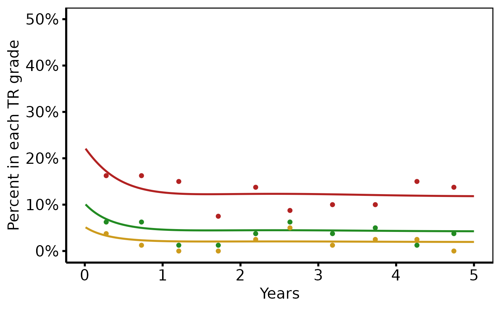

Prepare nonparametric ordinal outcome curve data for plotting
Source:R/nonparametric-ordinal-plot.R
hv_ordinal.RdValidates pre-computed grade-specific probability curves (and optional
binned data summary points) and returns an hv_ordinal object.
Call plot.hv_ordinal on the result to obtain a bare
ggplot2 multi-grade line plot that you can decorate with
colour scales and theme_hv_manuscript.
Usage
hv_ordinal(
curve_data,
x_col = "time",
estimate_col = "estimate",
grade_col = "grade",
data_points = NULL
)Arguments
- curve_data
Long-format data frame: one row per (time, grade) combination. Columns:
x_col,estimate_col,grade_col.- x_col
Name of the time column. Default
"time".- estimate_col
Name of the predicted probability column. Default
"estimate".- grade_col
Name of the grade/category column. Default
"grade".- data_points
Optional long-format data frame of binned data summary points. Must have columns matching
x_col,"value", andgrade_col. DefaultNULL.
Value
An object of class c("hv_ordinal", "hv_data"):
$dataThe
curve_datadata frame.$metaNamed list:
x_col,estimate_col,grade_col,n_obs,n_grades,has_data_points.$tablesList; contains
data_pointswhen supplied.
Details
SAS column mapping (predict dataset after averaging):
time←iv_echo(oriv_wristm)estimate← one ofp0,p1,p2,p3(individual grade probs, after wide-to-long reshape)grade← a new column created during the reshape
References
SAS templates: tp.np.tr.ivecho.average_curv.ordinal.sas,
tp.np.po_ar.u_multi.ordinal.sas,
tp.np.tr.ivecho.independence.sas,
tp.np.tr.ivecho.u.phases.sas.
Examples
dat <- sample_nonparametric_ordinal_data(
n = 800, time_max = 5,
grade_labels = c("None", "Mild", "Moderate", "Severe")
)
dat_pts <- sample_nonparametric_ordinal_points(
n = 800, time_max = 5,
grade_labels = c("None", "Mild", "Moderate", "Severe")
)
# 1. Build data object
ord <- hv_ordinal(dat, data_points = dat_pts)
ord # prints grade count and data-point flag
#> <hv_ordinal>
#> N curve pts : 2000 (4 grades)
#> x / estimate / grade : time / estimate / grade
#> Data points : yes
# 2. Bare plot -- undecorated ggplot returned by plot.hv_ordinal
p <- plot(ord)
# 3. Decorate: colour palette, axis scales, labels, theme
p +
ggplot2::scale_colour_manual(
values = c(None = "steelblue",
Mild = "firebrick",
Moderate = "forestgreen",
Severe = "goldenrod3"),
name = "TR Grade"
) +
ggplot2::scale_x_continuous(breaks = 0:5) +
ggplot2::scale_y_continuous(limits = c(0, 0.50),
breaks = seq(0, 0.50, 0.10),
labels = scales::percent) +
ggplot2::labs(x = "Years", y = "Percent in each TR grade") +
theme_hv_poster()
#> Warning: Removed 500 rows containing missing values or values outside the scale range
#> (`geom_line()`).
#> Warning: Removed 10 rows containing missing values or values outside the scale range
#> (`geom_point()`).
